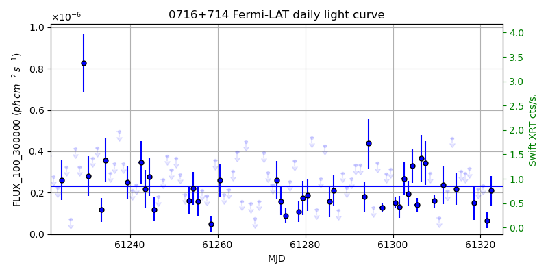
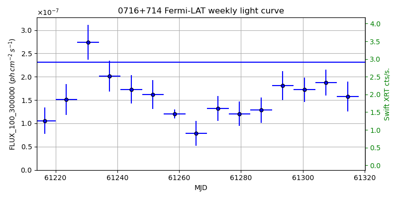
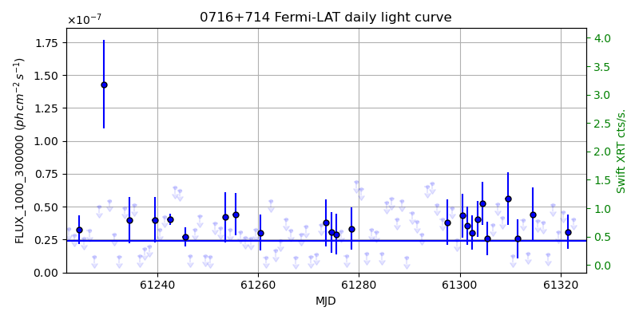
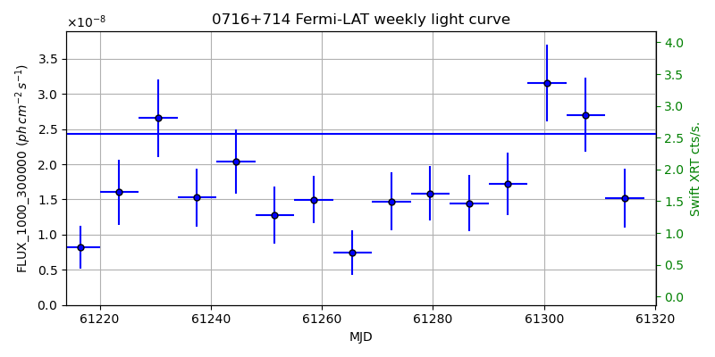

LAT Lightcurve site: https://fermi.gsfc.nasa.gov/ssc/data/access/lat/msl_lc/source/0716p714
Swift site: https://www.swift.psu.edu/monitoring/source.php?source=S50716+714
NED: Query
Time of last update of this page: UT: 2026-10-10 15:18 (MJD: 61323.638)
| Property | Value |
|---|---|
| R.A. | 7:21:43.20 |
| Dec. | 71:21:00.0 |
| z | 0.310 |
| 3FGL SpectrumType | LogParabola |
| 3FGL PL Index | |
| 3FGL Flux_100_300000 | 2.31e-07 1 / (s cm2) |
| 3FGL Flux_1000_300000 | 2.44e-08 1 / (s cm2) |
| 3FGL Flux >200 GeV | 6.00e-11 1 / (s cm2) |
| 3FGL Extrap. Crab >200 GeV | 0.25 |
| 3FGL Flux After EBL Absorption >200GeV | 1.88e-11 1 / (s cm2) |
| 3FGL EBL Crab Fraction >200GeV | 0.08 |

| MJD | dMJD | Flux | dFlux | Frac3FGL | FracCrab>200GeV | EBLFracCrab>200GeV |
|---|---|---|---|---|---|---|
| 61318.50 | 0.50 | 1.51e-07 | 8.29e-08 | 0.66 | 0.17 | 0.05 |
| 61319.50 | 0.50 | 2.17e-07 | 0.00e+00 | 0.00 | 0.00 | 0.00 |
| 61320.50 | 0.50 | 2.35e-07 | 0.00e+00 | 0.00 | 0.00 | 0.00 |
| 61321.50 | 0.50 | 6.68e-08 | 3.95e-08 | 0.29 | 0.07 | 0.02 |
| 61322.50 | 0.50 | 2.10e-07 | 7.06e-08 | 0.91 | 0.23 | 0.07 |

| MJD | dMJD | Flux | dFlux | Frac3FGL | FracCrab>200GeV | EBLFracCrab>200GeV |
|---|---|---|---|---|---|---|
| 61286.50 | 3.50 | 1.28e-07 | 2.70e-08 | 0.56 | 0.14 | 0.04 |
| 61293.50 | 3.50 | 1.81e-07 | 3.07e-08 | 0.78 | 0.20 | 0.06 |
| 61300.50 | 3.50 | 1.72e-07 | 2.60e-08 | 0.75 | 0.19 | 0.06 |
| 61307.50 | 3.50 | 1.88e-07 | 2.75e-08 | 0.81 | 0.21 | 0.07 |
| 61314.50 | 3.50 | 1.57e-07 | 3.20e-08 | 0.68 | 0.17 | 0.05 |

| MJD | dMJD | Flux | dFlux | Frac3FGL | FracCrab>200GeV | EBLFracCrab>200GeV |
|---|---|---|---|---|---|---|
| 61318.50 | 0.50 | 5.12e-08 | 0.00e+00 | 0.00 | 0.00 | 0.00 |
| 61319.50 | 0.50 | 3.07e-08 | 0.00e+00 | 0.00 | 0.00 | 0.00 |
| 61320.50 | 0.50 | 4.62e-08 | 0.00e+00 | 0.00 | 0.00 | 0.00 |
| 61321.50 | 0.50 | 3.09e-08 | 1.30e-08 | 1.27 | 0.32 | 0.10 |
| 61322.50 | 0.50 | 4.07e-08 | 0.00e+00 | 0.00 | 0.00 | 0.00 |

| MJD | dMJD | Flux | dFlux | Frac3FGL | FracCrab>200GeV | EBLFracCrab>200GeV |
|---|---|---|---|---|---|---|
| 61286.50 | 3.50 | 1.45e-08 | 4.00e-09 | 0.59 | 0.15 | 0.05 |
| 61293.50 | 3.50 | 1.72e-08 | 4.43e-09 | 0.71 | 0.18 | 0.06 |
| 61300.50 | 3.50 | 3.16e-08 | 5.44e-09 | 1.30 | 0.33 | 0.10 |
| 61307.50 | 3.50 | 2.70e-08 | 5.29e-09 | 1.11 | 0.28 | 0.09 |
| 61314.50 | 3.50 | 1.52e-08 | 4.21e-09 | 0.62 | 0.16 | 0.05 |
--------------------------------------------------------- Using user-supplied coords: 7:21:43.20 71:21:00.0 2000 --------------------------------------------------------- FLWO UT night of: 2026-10-11 Local Sid. @ Midnight: 00:55 Sunset (-15.0) (local, UT): 19:04 02:04 Sunrise (-15.0) (local, UT): 05:18 12:18 Moonrise (local, UT): Moonset (local, UT): Moon phase: 0.01 --------------------------------------------------------- AzTime LSID UT Obj_el Obj_az Mn_el Mn_az Sep. --------------------------------------------------------- 19:04 19:58 02:04 13.2 2.8 -16.1 264.2 101.7 19:34 20:29 02:34 13.7 5.2 -22.3 267.8 101.9 20:04 20:59 03:04 14.4 7.6 -28.5 271.5 102.1 20:34 21:29 03:34 15.3 9.9 -34.7 275.4 102.2 21:04 21:59 04:04 16.6 12.1 -40.8 279.7 102.4 21:34 22:29 04:34 18.0 14.1 -46.8 284.6 102.6 22:04 22:59 05:04 19.7 15.9 -52.7 290.5 102.8 22:34 23:29 05:34 21.5 17.6 -58.4 297.7 103.0 23:04 23:59 06:04 23.5 19.0 -63.6 307.3 103.2 23:34 00:29 06:34 25.7 20.2 -68.1 320.3 103.4 00:04 00:59 07:04 27.9 21.1 -71.3 338.2 103.6 00:34 01:29 07:34 30.3 21.8 -72.6 0.4 103.9 01:04 01:59 08:04 32.6 22.1 -71.5 22.7 104.1 01:34 02:30 08:34 35.1 22.1 -68.3 40.8 104.3 02:04 03:00 09:04 37.4 21.7 -63.9 54.1 104.5 02:34 03:30 09:34 39.8 20.9 -58.7 63.8 104.7 03:04 04:00 10:04 42.0 19.6 -53.1 71.2 105.0 03:34 04:30 10:34 44.0 17.9 -47.3 77.2 105.2 04:04 05:00 11:04 45.9 15.7 -41.4 82.2 105.4 04:34 05:30 11:34 47.5 13.1 -35.3 86.6 105.6 05:04 06:00 12:04 48.8 10.1 -29.2 90.6 105.8 05:18 06:14 12:18 49.3 8.6 -26.5 92.4 105.9 --------------------------------------------------------- Source never above horizon of 55.0 deg. Dark hours >55 deg.: 0.00